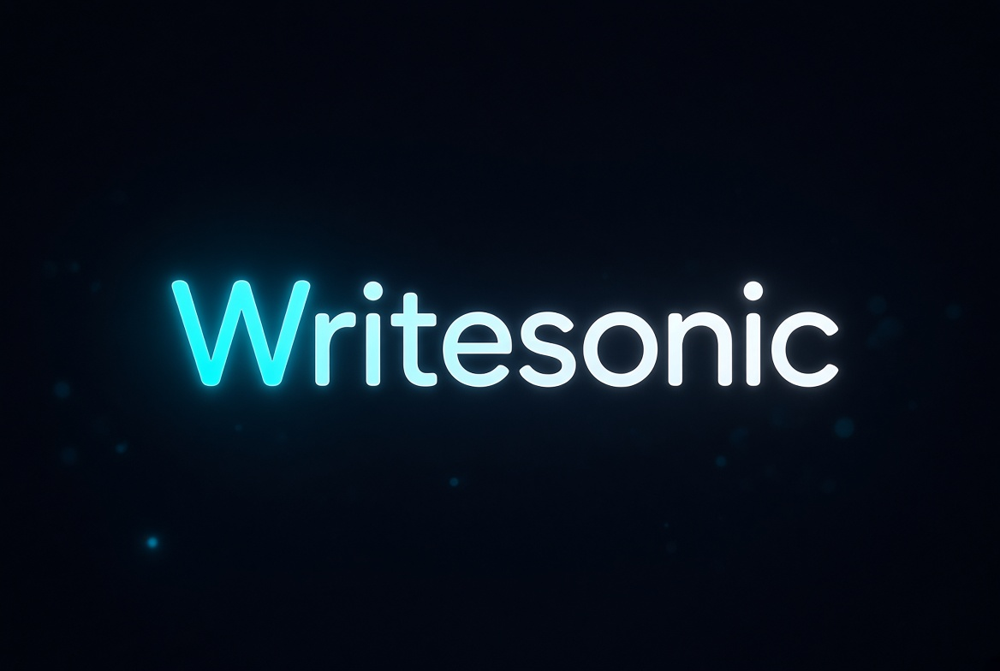

أدوات الذكاء الاصطناعي
7 أكتوبر 2026
ما هو WriteSonic؟ دليل شامل لصناعة المحتوى بالذكاء الاصطناعي
تعرف على WriteSonic وكيف يساعدك في كتابة المقالات وصناعة المحتوى وتحسين SEO، وما الذي يميزه عن أدوات الذكاء الاصطناعي العامة.
اقرأ المقال ←